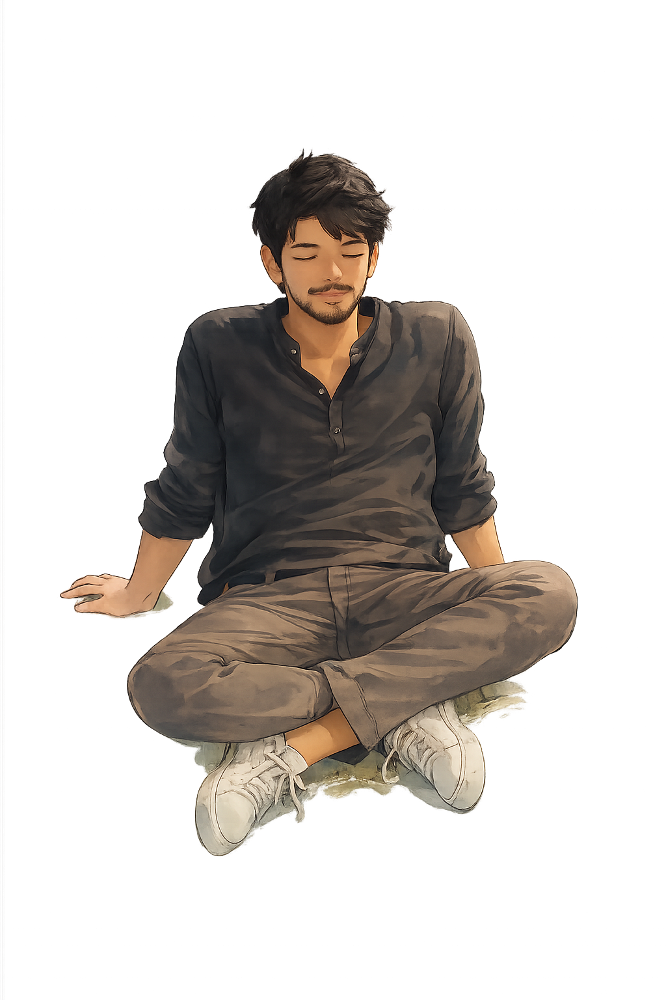

I build backend systems and AI-assisted tools. I also write Everything in Between — thoughts on connection, kindness, and the things that stay. Reach me on LinkedIn or by email.

Niwin Kumar — building scalable backends and AI-integrated platforms
Build note
Get in touch — for backend engineering, integrations, AI tools, or a good conversation. © 2026 · sky shifts with the hour